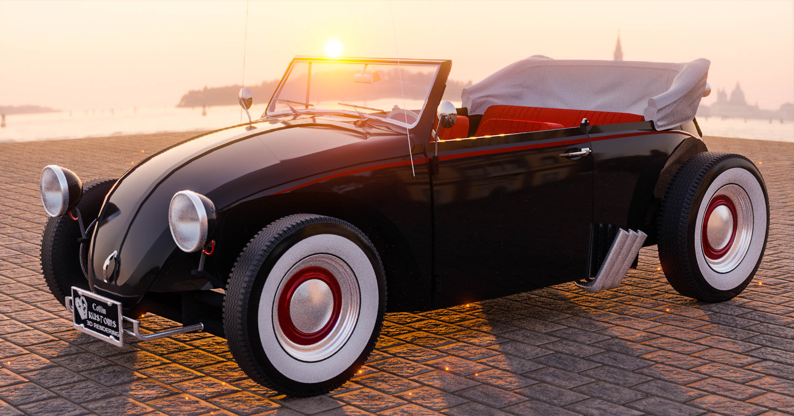
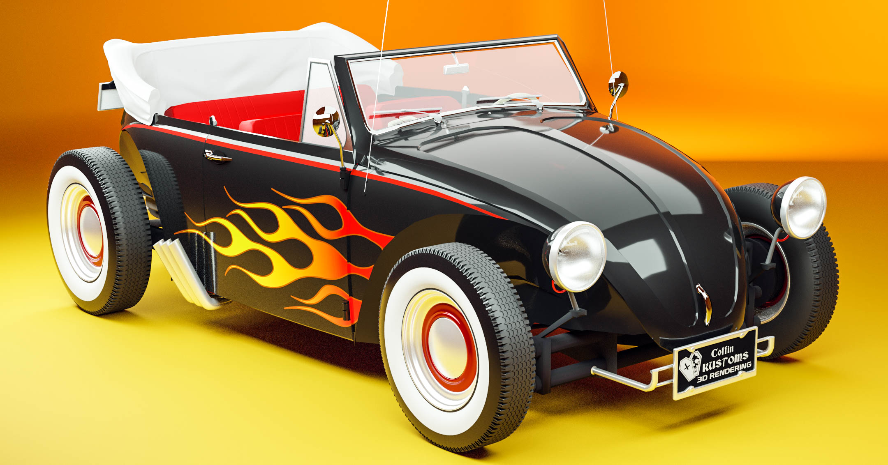
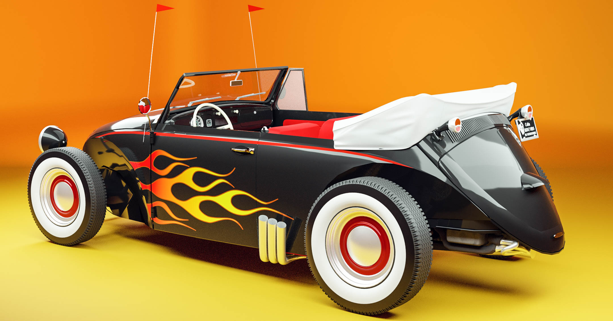
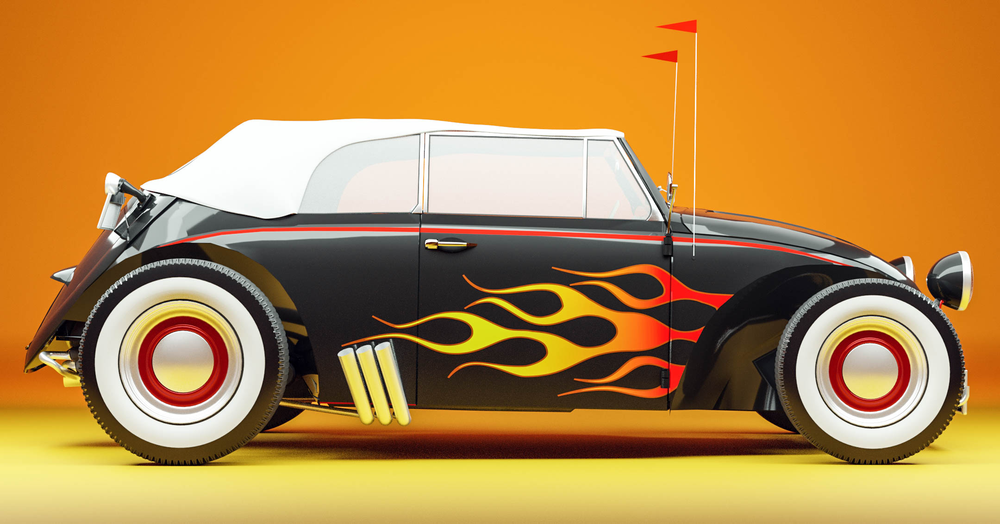

VW Beetle "VolksRod"
A Volksrod. Probably you never heard about and that's because nobody cares about VolksRod's but it's really cool.
This one has a chopped top, body work because of the fenders who got removed, six exhausts, 3 in each side (why?) and you can even pretend that you are safe from the rain in that terrible top.
   